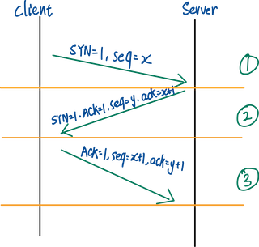
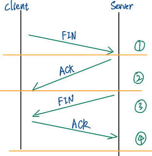
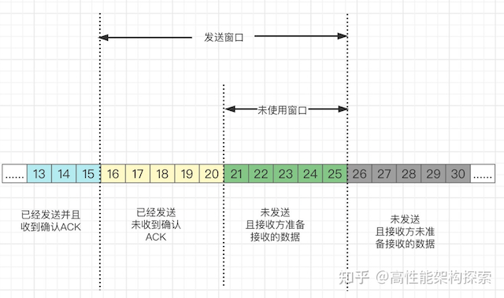
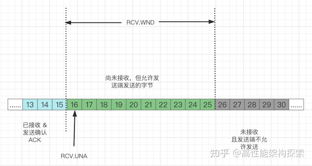

TCP 协议常见问题 #
三次握手 #
基本原理

注意上图 ACK 和 ack 的区别, ACK/SYN/FIN 都是标志位, 其值只有 1 或 0, ack 代表确认号, 代表希望下一次收到的 seq 为 ack.
三次握手的目的: 建立可靠的全双工通信机制
为什么需要三次握手:
(1) 防止重复连接, 在网络状况比较差的情况下, 发送方可能发了多次建立连接的请求, 如果只有两次请求, server 只能选择接收或者是拒绝, 但 server 区分不了这是正常的请求还是重发的请求, 所以重发的请求会导致大量无效连接的建立.
如果是三次握手, 客户端可以根据接收到的消息, 判断当前连接是否为历史连接, 如果判断为历史连接, 就会发送 RST 报文给服务端终止连接. 如果判断不是历史连接, 就是执行第三次握手.
(2) 同步初始化序列号, 如果是两次握手就无法对序列号进行确认了.
序列号的作用就是防止数据包重复发送, 以及有效的解决数据接收时顺序颠倒的问题.
四次挥手 #

连接建立双方都可以主动断开连接. 由于每个方向都有一对 FIN 和 ACK, 故称为 4 次握手.
FIN 仅仅代表发起方不再发送消息了, 但是还能接收消息. 以上图为例, server 收到 client 的 FIN 后, 由于服务端可能还有数据需要处理和发送, 因此先回了一个 ACK,
客户端为什么需要等 2MSL: 确保服务端接收到了 ACK, 如果服务端在一个 MSL 未接收到, 客户端会重发 FIN, 客户端会再次发 ACK 进行确认. 如果没有这个 2MSL, 服务端重发的 FIN 客户端无法接收到, 导致服务端侧的连接无法关闭.
滑动窗口 #
由于 TCP 是一个全双工协议 (可以同时接收和发送消息), 滑动窗口解决的是流量控制问题, 如果接收端和发送端对数据包处理速度不同, 如何让双方达成一致.
一句话介绍滑动窗口协议: 由于TCP是全双工协议,发送方和接收方都可以发送和接收消息,所以它们各有一个发送窗口和接收窗口,发送窗口中保存着发送但未收到ACK的数据以及待发送的数据, 当收到来自接收方的 ACK 后窗口会进行相应的收缩和移动, 接收窗口代表允许接收的数据长度.
接收窗口和发送窗口存储在系统缓存中,会随着协议运行自动调整(操作系统), 当我们的应用程序没有足够快地读取字节时, 缓存区中的可用空间就会缩小.
比如缓存中存储了 150 个字节, 应用服务从缓存中只读取了 50 个字节, 那么剩余 100 个字节还在缓存区中, 假设缓存区总空间为 300, 此时缓存区可用空间只有 200, 那么对应接收窗口的大小也相应的调整到 200.
发送窗口 #

可用窗口大小 = SND.UNA + SND.WND - SND.NXT
接收窗口 #

拥塞控制 #
一句话: 发送方维护一个拥塞窗口(cwnd)用于完成拥塞控制. 原则: 只有网络没有出现拥塞, 拥塞窗口可以增大一点; 当网路中出现拥塞后, 就必须缩小拥塞窗口. 发送方判断网络拥塞的依据就是是否发生了超时.
慢启动 #
一句话: 由小到大(指数递增)慢慢增加拥塞窗口.
拥塞避免 #
算法: 每经过一个 RTT, 对 cwnd 进行加一.
遇到拥塞时, ssthresh = cwnd / 2. cwnd 重新从 1 开始.
一句话:
- 引入慢开始门限, 分段使用不同算法控制cwnd的增长
当 cwnd < ssthresh 时, 使用慢开始算法
当 cwnd = ssthresh 时, 使用拥塞避免算法
当 cwnd > ssthresh 时, 使用慢开始/拥塞避免算法
快重传 #
- 不要等待自己发送消息的时候再去捎带 ACK, 而是要立即发送确认, 即使收到失序的报文段也要立即发出对已收到报文段的重复确认.
- 发送方只要一连收到3个重复确认, 立即进行重传.
快恢复 #
快恢复门限由 ssthresh 开始.